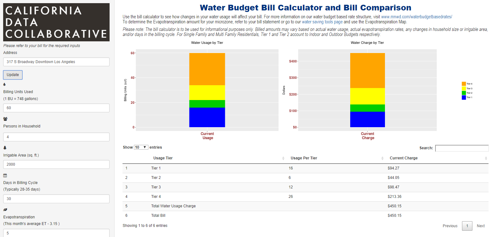

Water Bill Calculator
The goal of this project is to build an web application to easily estimate a water bill across any part of California with OWRS compliant water rate data specified. Tool allows users to put in address, mapping to agency with address, calculate and visualize water bill and usage by tiers. This is a civic data marketplace intern project collaborating with ARGO lab and is part of the California Data Collaborative (“CaDC”) project.
Methods: Data Analysis (R), Visualization (R shiny, ggplot2), Web Servers(AWS, Shinyapps.io).